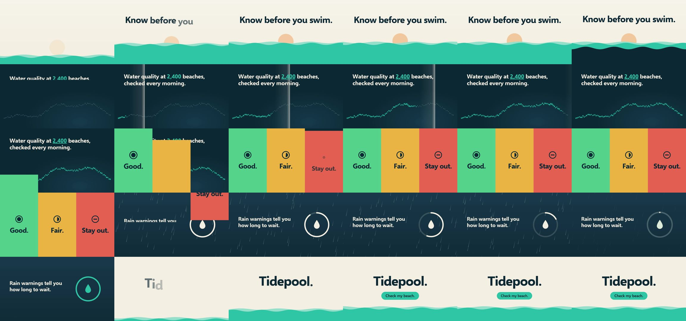

calesthio/OpenMontage: test run, 2026-10-11
The same brief for every skill: a 15-second promo for a made-up app, five fixed lines of on-screen copy, 1920 x 1080 at 30 frames per second. Claude Code (Claude Opus 5.5) made it with the skill in a throwaway sandbox with no API keys for video, image or voice models. 8.6 minutes; sound: no. All results · The brief · How it is checked
Runs a whole production pipeline and still needed no paid model for this brief; bold colour blocks.
The four checks
| Renders to a playable file | pass | H.264 |
|---|---|---|
| Length, size and frame rate as asked | pass | 15.0 s, 1920x1080, 30.0 fps |
| All five lines readable | pass | 5 of 5 |
| The picture moves | pass | 14% of sampled frame pairs held still |
Frames sampled twice a second

How it was made (the session's closing message)
I've rendered the Tidepool promo with OpenMontage, the tool installed from ~/src. It runs the stages from research to compose and renders with HyperFrames on this machine, with no API keys or paid models. The file is 15.0 s, 1920×1080, 30 fps, H.264, 450 frames. The pipeline's checks passed (all text meets WCAG AA contrast), and I looked at frames from the final file. **What's on screen.** The five lines appear verbatim and in order: 1. **0–3 s:** "Know before you swim." over a sand dawn, with a rising sun and a teal waterline. 2. **3–7 s:** "Water quality at 2,400 beaches, checked every morning." on a dark sea-blue background, with a dotted coastline that lights up left to right. 3. **6–9.8 s:** "Good. Fair. Stay out." as green, amber and coral columns, each with a simple shape icon. 4. **9.2–12.7 s:** "Rain warnings tell you how long to wait." over falling rain. A ring empties like a timer, with no numbers, and turns teal as the rain stops. 5. **12.2–15 s:** "Tidepool." with "Check my beach." in a teal pill, above the waterline again. There are no other words, logos or claims. Everything is drawn with code; the font is Selawik, which was already on this machine. **Choices I made without asking, as you asked:** - **Renderer:** HyperFrames was the only option available. The tool's other renderer, Remotion, isn't installed here. - **Concept:** I picked the waterline idea out of three. - **Sound:** the video is silent and has no audio track. Music was optional and no music generator is configured. - **Web research:** I did a short search because the tool won't continue past research without a research brief. It is used only as background in the project files; none of it appears in the video. **One thing I changed in the project:** the HyperFrames setup names the project `hyperframes`. That made `npx hyperframes` find the project instead of the actual tool, so the first render attempt failed. I renamed the project in `package.json`; nothing in OpenMontage itself was changed. The project is in `~/work/project`: the composition is `hyperframes/index.html` with its design notes in `DESIGN.md`, plus the planning files, checkpoints and the original render. I didn't run the tool's optional publish step. DELIVERABLE: ~/work/output/video.mp4